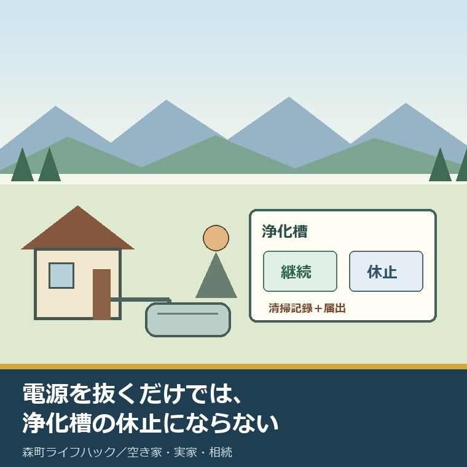
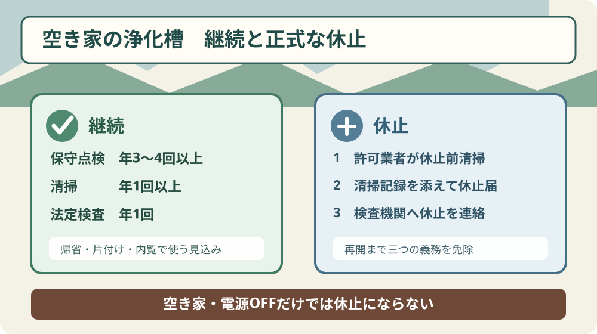
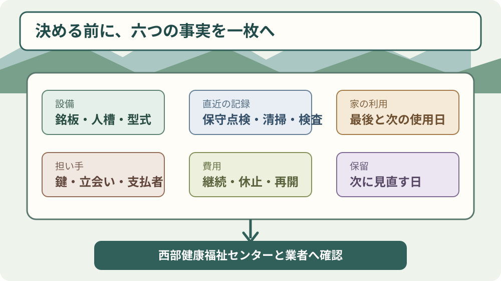

空き家の浄化槽は休止か継続か｜森町で比較

この記事の要点
Q. 誰も住まない森町の実家で、浄化槽は休止と継続のどちらを選びますか。
A. 次に使う時期と、現地で管理する人から選びます。おおむね1年以上使わない見込みなら、休止前の清掃と届出を確認します。帰省や売却準備でトイレ等を使うなら、保守点検・清掃・法定検査を続けます。未定なら記録をそろえ、見直し日を決めて保留できます。
森町の誰も住まない実家に浄化槽がある。保守点検の請求、清掃の日程、法定検査の案内が届くたび、このまま維持するのか、止められるのかと迷う家族を想定して書きます。
所有者家族は、固定資産税、火災保険、草刈り、台風後の点検、水道、電気を既に支えています。遠方から森町へ移動する時間も無料ではありません。浄化槽だけを「義務だから」で片付ければ、現地の担い手と維持費の負担が見えなくなります。
一方、誰も住まないからブロワの電源を抜けば終わり、と考えるのも危険です。浄化槽は微生物で汚水を処理する設備で、空き家になった事実だけでは正式な休止になりません。
結論を急がず、継続と休止で必要な仕事を分けます。家を売る、貸す、再び住むという行き先は、今日決めなくて構いません。
2026年8月13日更新、未受検者へ法定検査の案内
静岡県の「浄化槽を使用している皆様へ」は2026年8月13日に更新されました。トピックスには、浄化槽の法定検査を受検していない人へ受検案内を送付していると書かれています。
ページには、新たに浄化槽を設置した管理者向け、前回の受検から1年以上経過した管理者向け、地区ごとの案内文が掲載されています。
これは2026年に法定検査が新しく始まったという意味ではありません。県ページは、保守点検、清掃、法定検査の三つを浄化槽管理者の義務として説明しています。
法定検査は、保守点検業者が機械を調整する作業の代わりではありません。清掃業者が汚泥を引き抜く作業とも別です。
設置後等の水質検査は浄化槽法第7条に基づき、使用開始後3か月を経過した日から5か月以内、つまり使用開始後3か月から8か月までに行います。その後の定期検査は第11条に基づき毎年1回です。
10人槽以下の第11条検査手数料は5,800円と掲載されています。保守点検、清掃、ブロワの電気代は含まれないため、5,800円を年間維持費の総額として扱わないでください。
県ページは検査依頼先を一般財団法人静岡県生活科学検査センター、電話054-621-5030としています。案内が届く前でも、直近の検査票が見つからなければ受検状況を確かめる理由になります。
空き家と正式な休止は、同じ状態ではない
空き家にしただけ、電源を切っただけでは、浄化槽を休止したことになりません。
静岡県の「浄化槽の使用廃止、休止、再開について」は、休止に当たっての清掃を実施した後、浄化槽使用休止届出書を提出できると説明しています。
届出書には清掃記録を添付します。休止したい日だけを書いて先に出し、清掃を後回しにする順番ではありません。
森町に設置された浄化槽の届出先は、静岡県西部健康福祉センター環境課です。所在地は磐田市見付3599-4、浄化槽関係の現行電話は0538-37-2250です。
休止届を出した場合は、指定検査機関にも法定検査を休止することを連絡します。届出後、使用を再開するまで、保守点検、清掃、法定検査の義務が免除されます。
休止中も建物、槽のふた、敷地、電気配線まで行政が管理してくれるわけではありません。空き家の安全確認、草刈り、近隣対応、破損確認は所有者側に残ります。
休止届は、何もしなくてよいという札ではありません。最初に清掃し、記録を残し、使わない状態へ切り替える手続です。

再開は30日以内の届出、直前点検は「望ましい」
休止した浄化槽を再び使った場合は、再開した日、または管理する浄化槽が再開されたことを知った日から30日以内に浄化槽使用再開届出書を提出します。
指定検査機関へも法定検査を再開する旨を連絡します。再開後は、保守点検、清掃、法定検査の三つが必要な状態へ戻ります。
環境省の改正浄化槽法の解説資料は、再開する際、使用開始直前に保守点検を行うことが望ましいとしています。「望ましい」を法令上の一律な期限へ言い換えません。
同資料が示す休止期間の標準的な目安はおおむね1年以上です。ただし、売却などで休止期間を事前に把握できない場合は、期間を問わず休止扱いになり得ると説明されています。
別荘や季節施設のように間欠的な利用を前提とする浄化槽は、休止手続を取るか、休止せず維持管理を続けるかを使用状況ごとに判断するとされています。
森町の実家でも、月に一度の帰省でトイレを使う、片付け中に台所を使う、内覧のため水回りを動かすなら、休止に合うかを業者と西部健康福祉センターへ確認します。
「一年使わないと思う」だけで届出が完成するわけではありません。清掃日、使用予定、再開時の連絡役までが一つの段取りです。
継続なら三つの維持管理を混ぜない
浄化槽を継続する場合、家庭用の保守点検は年3回から4回以上、清掃は年1回以上、法定検査は年1回と県と森町が案内しています。
保守点検は、浄化槽本体やブロワなどの調整、修理、消毒剤の補充を行います。静岡県の登録業者へ委託します。
清掃は、槽内にたまった汚泥の引き抜き、機器の洗浄などです。森町の許可を受けた浄化槽清掃業者へ依頼します。
法定検査は、設置や維持管理が適正で、きれいな水を放流できているかを県指定の検査機関が確認します。点検契約があるだけで受検済みとは限りません。
保守点検、清掃、法定検査の記録は3年間保存します。請求書だけでは作業内容と実施日が分からないことがあるため、三種類の記録票を分けます。
森町の現行ページは、浄化槽の相談先として住民生活課生活環境係0538-85-6314を掲載しています。補助金の受付は2026年4月から上下水道課が担当していますが、休止届の提出先は西部健康福祉センターです。
同じ「浄化槽」の相談でも、維持管理、休止届、設置補助で窓口が分かれます。最初の電話で設置場所と相談内容を伝え、次の窓口名を書き残します。
休止と継続を六つの項目で比較する
| 比較項目 | 継続 | 正式な休止 |
|---|---|---|
| 向く状態 | 帰省、片付け、内覧、改修などでトイレや台所を使う | おおむね1年以上使わない、または売却時期が読めず当面使わない |
| 開始時の作業 | 既存契約と直近記録を確認 | 許可業者による休止前清掃、清掃記録の受領 |
| 届出 | 休止届は出さない | 清掃記録を添えて休止届を西部健康福祉センターへ提出 |
| 期間中 | 保守点検・清掃・法定検査を実施 | 三つの義務が再開まで免除 |
| 費用 | 契約費、清掃費、検査料、電気代を確認 | 休止前清掃費、届出代行の有無、再開前点検費などを個別確認 |
| 再開 | 維持管理を続けたまま使用 | 再開後30日以内に再開届、検査機関へ連絡 |
この表だけで一律に安い方は決まりません。県と森町の現行ページには、森町の全業者に共通する保守点検料、清掃料、休止前清掃料は掲載されていません。
継続費は、処理方式、人槽、汚泥量、訪問条件、契約内容で変わります。休止費も、清掃の状態や業者の作業範囲で変わります。
見積りでは、作業名、実施回数、法定検査料を含むか、休止届を代行するか、再開前点検はいくらかを同じ欄で比べます。
古い森町の下水道Q&Aには浄化槽維持費の例がありますが、2002年の国資料を基にしています。2026年の一軒の契約額として使いません。
安さだけでなく、現地へ鍵を開けに行く回数、業者へ連絡する後継、請求を受ける人も費用として見ます。
水道の廃止と浄化槽の休止は別の手続
意外ですが、森町の水道には「料金を止めて権利を残す休止制度」がありません。一方、浄化槽には清掃と届出による休止があります。
水道を廃止しても、浄化槽使用休止届を出したことにはなりません。浄化槽の電源を切っても、水道の廃止届にはなりません。
森町の水道は一度廃止すると、再び使う際は新規扱いとなり、加入金が発生すると町が説明しています。詳しい金額と給水届の順番は、誰も住まない実家の水道を廃止するか継続するかの記事に分けました。
庭の散水栓だけを使い、家の排水を浄化槽へ流さない場合もあります。どの蛇口や排水口が槽につながるかは、建物ごとの配管図と現地確認が必要です。
水道、電気、浄化槽を一枚の「停止」にまとめず、契約、物理的な状態、行政への届出を三列に分けます。
休止を選ぶ前に、ブロワの電源を誰が扱うか、槽内をどの状態にするかを清掃業者と保守点検業者へ確認します。所有者だけで作業方法を決めません。
森町の空き家では、設備より担い手が先に詰まる
森町の空き家を支えているのは、設備表ではなく人です。鍵を持つ人、草を刈る人、台風の後に屋根を見る人、業者の訪問に立ち会う人が必要です。
町外の所有者には移動が加わります。平日の窓口、清掃業者の予定、法定検査の日が別々なら、一つの浄化槽に何度も帰ることがあります。
後継が決まらないまま、親の口座から費用だけが出ている家もあり得ます。名義、支払口座、現地担当、緊急連絡先を分けないと、相続後に契約先から探すことになります。
森町は第2期空家等対策計画を2023年11月から2032年度末までの期間で持ち、庁内分担に上下水道課も置いています。計画の読み方は、町の10年計画から実家の位置を確かめる記事にまとめています。
町の計画があっても、一軒ごとの維持費や移動は家族に残ります。既に払っている努力を認めた上で、続けられない管理を具体的に減らす必要があります。
継続の良い点は、近い再利用へ戻しやすいこと
半年後に家族が戻るかもしれない、売却前に水回りを確認したい、片付けでトイレを使う。こうした予定がある家は、継続の方が動きやすい場合があります。
空き家バンクで家を探す側も、水道、浄化槽、修繕履歴を価格より先に確認します。買い手側の確認順は、森町の空き家バンクで設備を確かめる記事を参照してください。
森町三倉の公開物件には単独処理浄化槽と記載された例があります。物件欄の読み方は、三倉の空き家バンク掲載物件を比べた記事で扱っています。
継続の良さが出るのは、点検予定、支払者、現地の鍵、故障時の連絡先が動いている場合です。契約だけ残して記録を見ない状態は継続管理とは呼べません。
再利用の可能性を残すなら、次に使う見込みの日付を置きます。「いつか」ではなく、2026年12月31日や売却媒介の開始日など、見直せる日へ変えます。
休止の良い点は、使わない期間の義務を整理できること
適切に休止すれば、再開まで保守点検、清掃、法定検査の義務が免除されます。長く使わない家に同じ維持作業を重ねる負担を減らせます。
ただし、休止前清掃の費用と立会い、清掃記録、届出、検査機関への連絡が先に要ります。入口の仕事を飛ばして期間中だけを軽くすることはできません。
休止後も、槽の上へ車両や物を置かない、ふたの破損を確認する、敷地の草木を管理するといった建物側の仕事は残ります。具体的な保全方法は業者へ確認します。
売却や賃貸を決めていなくても休止を検討できます。環境省資料は、売却などで休止期間が読めない場合を、期間を問わず休止扱いとなり得る例に挙げています。
休止は家の処分を決める手続ではありません。設備を使わない期間だけ整え、家の行き先を後で選ぶ余地を残す方法です。
注文したい点は、公式ページだけで総費用を決められないこと
県の案内は、三つの義務、休止の手順、法定検査料を明確にしています。その一方で、休止前清掃と再開前点検を合わせた総費用は分かりません。
受検案内についても、2026年8月13日のページ本文だけでは、各世帯の発送日、回答期限、案内後の個別手順まで確定できません。
電話番号の掲載にも差があります。森町の2026年4月1日更新ページは検査機関を054-621-5863としていますが、県の2026年8月13日更新ページは054-621-5030です。本記事は日付が新しい県掲載番号を案内します。
西部健康福祉センターについても、森町ページの県問合先番号と県の現行業務案内の浄化槽担当番号が異なります。休止届は県の現行業務案内にある0538-37-2250へ確認します。
案内を一本化してくれれば、遠方家族は迷いにくくなります。現状では、電話した日、担当部署、確認した内容を家族の記録へ残すのが現実的です。
まだ決めないなら、保留の期限を決める
管理費を減らしたい家族へ継続だけを勧めることに、私はためらいがあります。一方で、半年後に使う可能性がある家へ休止だけを勧めることにもためらいがあります。
判断材料が足りないなら、休止か継続かを今日決めなくてよい。ただし、届出も維持管理もない状態を保留とは呼びません。
保留中は現状の義務を確認し、次の清掃日や検査日を落とさないようにします。その間に休止見積りと再開条件を集めます。
見直し日は、2026年10月31日、次の帰省日、媒介契約を結ぶ日など、カレンダーに置ける日にします。判断する人も一人書きます。
まだ決めない自由は、何もしない自由ではありません。戻せる状態を保ちながら、次に決める日を置くための余白です。

対案・結論：今日、銘板と直近3回分の記録を撮る
今日できる小さな一歩は、浄化槽の銘板と、直近の保守点検・清掃・法定検査の記録をスマートフォンで撮ることです。
記録が3回ずつ必要という意味ではありません。三種類のうち手元にある直近分を集め、実施日、業者名、判定、次回予定が読めるように撮ります。
森町へ行けない日は、鍵を持つ家族へ「槽のふたを開けず、見える銘板と書類だけ」と頼みます。安全が分からない設備へ近づかせません。
写真の下に、最後にトイレや台所を使った日、次に使う可能性がある日、現地で立ち会える人を書きます。分からなければ未確認とします。
その一枚を見ながら、西部健康福祉センターへ休止届の提出方法を、清掃業者へ休止前作業と費用を、保守点検業者へ再開前の作業を尋ねます。
電源を抜くことは、休止の判断ではありません。紙を出す前に清掃し、決め切れないなら現在の管理を切らさず見直し日を置きます。
家族に残す浄化槽記録
基本情報は、設置場所、管理者名、所有者名、型式、人槽、処理方式、設置年月です。銘板写真と位置図を付けます。
保守点検は、業者名、契約番号、実施日、指摘、修理、消毒剤、次回予定を記録します。
清掃は、森町の許可業者名、実施日、清掃記録の保管場所、支払額、次回予定を記録します。
法定検査は、第7条か第11条か、受検日、判定、改善事項、検査票の保管場所、次回予定を記録します。
家の利用は、最終使用日、帰省予定、片付け、内覧、改修、売却、賃貸の予定を、決定と未定に分けます。
担い手は、鍵を持つ人、業者の立会人、支払者、緊急連絡先、次に引き継ぐ後継を分けます。一人へ全部載せません。
休止する場合は、休止前清掃の記録、休止届の控え、検査機関へ連絡した日を残します。再開したら、再開日、再開届、検査再開の連絡、直前点検を同じ束へ足します。
大石の視点
ここからは、大石浩之（磐田市／不動産業）としての意見です。体験ストックに、浄化槽の休止によって費用を減らした一人称の実例はありません。
私は不動産の側から、売却予定が未定なら設備を動かしたままにした方が見せやすい、と言いたくなることがあります。けれど、それは管理費を払い続ける家族の負担を外から軽く見た言葉になり得ます。
反対に、誰も住まないなら休止すればよい、と言い切るのも違います。帰省時のトイレ、片付け、内覧、再開作業を誰が担うかで答えが変わります。
浄化槽は家電ではありません。最後の清掃、法定検査、次に使う日、現地の担い手を一枚に並べてから、休止か継続かを選ぶ設備です。
森町に空き家を持つ家族は、もう十分に動いています。打開が要るのは、担当窓口と費用と再開条件が別々で、後継が同じ確認を繰り返すところです。
決め切れないなら、戻せるところで止まり、見直す日だけ決める。それが、家族の選択肢を残す管理だと考えます。
まとめ
静岡県の2026年8月13日更新ページは、法定検査の未受検者へ受検案内を送付していると案内しています。空き家だけを対象とする新制度ではありません。
継続する間は、家庭用の保守点検年3回から4回以上、清掃年1回以上、法定検査年1回を分けて実施します。
休止するなら、許可業者による清掃、清掃記録を添えた休止届、指定検査機関への連絡が先です。再開後30日以内には再開届を出します。
今日の一歩は、銘板と三種類の直近記録を撮ることです。次に使う日と現地担当を足し、休止費、継続費、再開条件を同じ一枚で比べます。
よくある質問
Q1. 誰も住んでいなければ、浄化槽の電源を切ってよいですか。
A1. 空き家であることや電源を切ることだけでは正式な休止になりません。休止前の清掃を市町の許可業者へ依頼し、清掃記録を添えて浄化槽使用休止届出書を西部健康福祉センターへ提出する手順を確認してください。
Q2. 浄化槽の法定検査を受けていないときは、どこへ申し込みますか。
A2. 静岡県の2026年8月13日更新ページは、指定検査機関の一般財団法人静岡県生活科学検査センターへ依頼するよう案内しています。現行の県掲載電話は054-621-5030です。
Q3. 売るか再び住むか未定でも、浄化槽を休止する必要がありますか。
A3. 直ちに決める必要はありません。次にトイレや台所を使う時期、直近の清掃・保守点検・法定検査、休止と再開の費用、現地管理者をそろえ、見直し日を決めて保留できます。
制度、届出様式、窓口、検査料は変わる場合があります。個別の槽の休止方法、清掃、電源、水張り、再開前点検は、西部健康福祉センター、森町、清掃業者、保守点検業者、指定検査機関へ確認してください。
参考にした公式情報
- 浄化槽を使用している皆様へ／静岡県（未受検者への受検案内、三つの維持管理、回数、法定検査料、指定検査機関を2026年9月8日に確認。更新日2026年8月13日）
- 浄化槽の使用廃止、休止、再開について／静岡県（休止前清掃、清掃記録の添付、免除範囲、再開後30日以内の届出、森町の届出先を2026年9月8日に確認。更新日2025年6月27日）
- 西部健康福祉センター業務案内／静岡県（森町を管轄する環境課の浄化槽担当電話0538-37-2250と所在地を2026年9月8日に確認）
- 浄化槽を使用している皆様へ／静岡県森町（保守点検・清掃・法定検査の回数、町の相談先、2026年4月からの補助金担当変更を2026年9月8日に確認。更新日2026年4月1日）
- 令和8年度森町浄化槽設置整備事業費補助金／静岡県森町（対象区域、新設・転換の要件、2026年度の受付担当を2026年9月8日に確認。更新日2026年4月14日）
- 改正浄化槽法の施行に向けた事例集／環境省（休止期間のおおむね1年以上という目安、売却時の扱い、再開直前の保守点検が望ましいことを2026年9月8日に確認）

磐田市で小さな不動産業を営みながら、森町の空き家・農地・実家じまいのご相談を受けています。地域と不動産実務をつなぐ目線で、確認の順番まで具体的に書きます。
最終確認日：2026-09-08 ／ 検査機関と西部健康福祉センターの電話番号は公式ページ間に差があるため、本記事は2026年9月8日時点の静岡県現行ページ掲載番号を案内しています。本記事は公表情報と執筆者の見解を分けて記載しています。